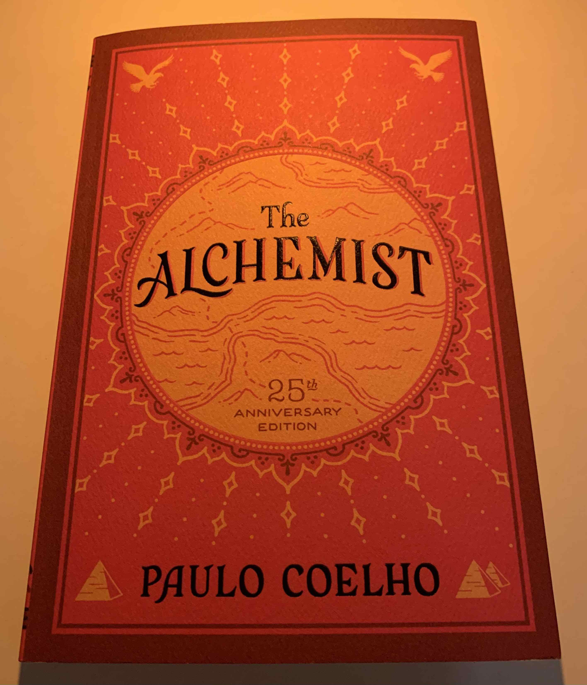

May 11, 2021

I grew up hearing the name "Paulo Coelho" very often but I never associated this book with its author and neither did I have much interest in figuring what kind of writer he is. To be completely honest, I wasn't a big reader (if a reader at all) during my time in the motherland, so even though Paulo's presence towers over many Brazilian writers I somehow managed to never get attracted towards his works until this current week.
While walking around a bookshop in Wellington just the week before, I came across this book and thought it would be a good reading for my partner since many people I know in Brazil had read this book. It would be a good conversation starter for her, I thought.
Fast forward, I was the one who ended up reading it first. I wanted to read fiction for a bit given that I had spent the past month (or more) reading Kant's Critique of Pure Reason. A break from philosophy and over-complicated vocabulary was needed. It ended up that the only fiction book I had in front of me was The Alchemist. The only book in my current list that I could read in my mother language (and there aren't many), and I had to travel all the way to New Zealand and get bored of a German philosopher to finally end up reading it (in English).
Oh, and about the book... There isn't much to say about it. Is it a good read? Yes it is. The book flows swiftly, the scenes are easy to imagine, the language is clear. The whole book can be read in a rainy Saturday afternoon.
I didn't know anything about this book before reading it from the source but my intuition knew that it was a book about self-help. The mantra of "follow your dreams" is present at all times during the reading, if not in the foreground it would be in the background through the narrative and characters presentation. Santiago (the main character) is a charismatic young boy. His naiveness and resilience are quite relatable and they create a good atmosphere throughout the book.
In general, I think that the book was worth a read. Now I know what people are referring to when they talk about Paulo Coelho and The Alchemist. I am still not sure what exactly about this book made him famous, but obviously something he did was right. My best guess is that both the approachable reading and the relatable narrative might have been the strongest points to trigger his fame.